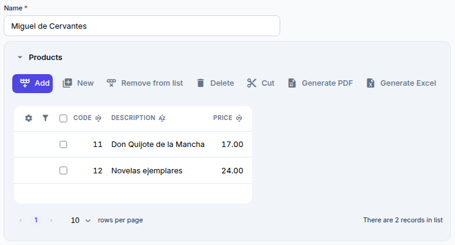

Course: 1. Getting started | 2. Basic domain model (1) | 3. Basic domain model (2) | 4. Refining the user interface | 5. Agile development | 6. Mapped superclass inheritance | 7. Entity inheritance | 8. View inheritance | 9. Java properties | 10. Calculated properties | 11. @DefaultValueCalculator in collections | 12. @Calculation and collections totals | 13. @DefaultValueCalculator from file | 14. Manual schema evolution | 15. Multi user default value calculation | 16. Synchronize persistent and computed properties | 17. Logic from database | 18. Validating with @EntityValidator | 19. Validation alternatives | 20. Validation on remove | 21. Custom Bean Validation annotation | 22. REST service call from validation | 23. Attributes in annotations | 24. Refining the standard behavior | 25. Behavior & business logic | 26. References & collections | A. Architecture & philosophy | B. Java Persistence API | C. Annotations | D. Automated testing
Nowadays agile development is no longer a "new and groundbreaking technique", but an established way to do software development, even the ideal way to go for many people.
If you are not familiar with agile development you can have a look at agilemanifesto.org. Basically, agile development encourages the use of feedback from a working product over a careful upfront design. This gives a more prominent role to programmers and users, and minimizes the importance of analysts and software architects.
This type of development also needs a different type of tools, because you need a working application rapidly. It must be as rapid to develop the initial application as it would be to write the functional description. Moreover, you need to respond to the user feedback quickly. The user needs to see his proposals running in a short time.
OpenXava is ideal for agile development because not only does it allow a very rapid initial development, but it also allows you to make changes and see the effects instantly. Let's see a little example of this.
For example, once the user has looked at your application and starts to play with it, he realizes that he works with books, music, software and so on. All these products have an author, and it would be useful to store the author and see products by author.
Adding this new feature to your application is simple and rapid. First, create a new class for Author, with this:
package com.yourcompany.invoicing.model;
import jakarta.persistence.*;
import org.openxava.annotations.*;
import lombok.*;
@Entity @Getter @Setter
public class Author {
@Id @GeneratedValue(strategy=GenerationType.UUID) @Hidden
@Column(length=36)
String oid;
@Column(length=50) @Required
String name;
}
Create an Author entity with an oid and nameNow, add the following code to the existing Product entity:
@ManyToOne(fetch=FetchType.LAZY)
@DescriptionsList
Author author;
Add a reference to Author in Product displayed as a drop-down listThus, your Product entity has a reference to Author.
You have really written a small amount of code. In order to see the effect, restart your application by clicking the Rerun button:

Then go to the browser and reload the page with the Product module, and you will see a combo for choosing the author of the product, just as you see here:

What if the user wants to choose an author and see all his products? Well, this is plain vanilla. You only have to make the relationship between Product and Author bidirectional. Go to the Author class and add the following code:
@OneToMany(mappedBy="author")
@ListProperties("number, description, price")
Collection<Product> products;
Add a products collection to AuthorCollection is in the java.util package, so you need to add the following import at the top of Author (or just press Alt+Enter on the class name in IntelliJ):
import java.util.*;Now, restart your application and refresh the browser with the Author module. Choose an author and you will see his products. You should see something like this:

Yes, you added a new collection, restarted your application, refreshed your browser and there you get the full user interface to manage it. In this case the user can click on the Add button to choose a book from a list of all existing books or click on New to enter the data to create a new book that will be added to the collection. Moreover, the author cannot be removed while he has books associated with him. You can define another behavior by setting cascade to REMOVE or ALL, like this:
@OneToMany(mappedBy="author", cascade=CascadeType.REMOVE) // DON'T ADD IT TO YOUR CODE
In this way only the New button to create new books is available, the Add button is not present. Moreover, when the author is removed, his books will be removed too. For the author/books case we don't want this behavior, but it can be useful in many cases where @ElementCollection is not enough.
In this lesson you have the complete code and steps required to make changes and see the result in the most interactive way. You have seen how OpenXava is an agile tool, ideal for doing agile development.
Yes! Now you have a working application with little effort. Although this application "as is" can be useful as a CRUD utility or a prototype, you still need to add validations, business logic, user interface behavior and so on in order to convert these entities you have written into a business application ready for your users.
You will learn all these advanced topics in the forthcoming lessons.
Any problem with this lesson? Ask in the forum Everything fine? Go to Lesson 6